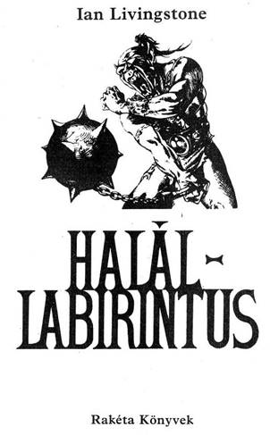
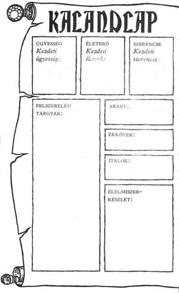
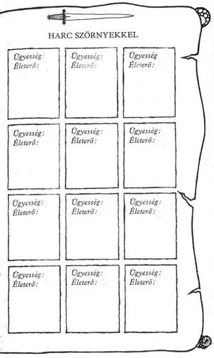
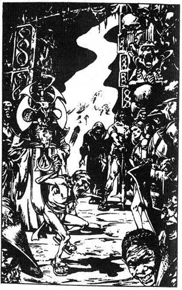

A mű eredeti címe:
Deathtrap Dungeon
lain McGaig illusztrációival
Fordította:
Bukor Éva
© Ian Livingstone 1984
Hungarian translation Bukor Éva, 1989
Ennek a könyvnek Te vagy a hőse. Te vívsz meg a kocka segítségével óriásokkal és szörnyekkel, magad döntesz, hogy merre haladj tovább, kivel barátkozz, csatázz. Nem pusztán az író fantáziája irányítja a történetet, hanem a te bátorságod, kíváncsiságod, leleményességed, kalandvágyad és józan eszed is.
Játék és regény egyszerre, amit a kezedben tartasz. Kalandos vállalkozás, amelybe belebukni is lehet, de ha jól döntesz, sikerrel jársz.
Így hát ezt a könyvet ne úgy olvasd, ahogy azt megszoktad. Mint látod, itt még az oldalak sincsenek megszámozva a bevezető után. A - hosszabb-rövidebb - bekezdések viselnek számokat egytől négyszázig. Ezek között előre-hátra lapozva haladsz előre a történetben a magad igénye szerint. Ha kardot rántasz az ellenségre, máshová lapozol, mint amikor elbújnál előle.
Lovagok, óriások, nindzsák, barbár harcosok, varázslók, szörnyetegek népesítik be ezt a fantasztikus világot. Mi kell ahhoz, hogy ne bukj el közöttük? Csak az, ami a mindennapi élethez is: ügyesség, jártasság, ötletesség; az, hogy felkészülten várd a nehézségeket.
És szerencse, amely nélkül az előző három talán mit sem ér, de ha csak erre számítasz, biztosan cserbenhagy.
Hogy mit jelent az ÜGYESSÉG, ÉLETERŐ és SZERENCSE ebben a könyvben, megtudod a
következőkből, Ha netán nem lenne teljesen világos a dolog, ne törődj vele. Bátran előre! Vágj neki az olvasásnak, menet közben minden a helyére kerül! De ha elfelejtenél valamit, hogyan kell jól megvívni egy harcot, hogyan menekülhetsz, hogyan gyógyíthatod magad a játék szabályai szerint, nyugodtan visszalapozhatsz.
Hogyan küzdj meg
a Halállabirintus
teremtményeivel?
Mielőtt belevágnál ebbe a kalandba, fel kell mérned, milyen erős vagy, illetve mennyire vagy gyenge? Van egy kardod és egy hátizsákod étellel, itallal az útra. Felkészültél a feladatra, megtanultál a karddal bánni és keményen edzettél, hogy fizikailag erős légy. Hogy megtudd, milyen hatékonyak voltak előkészületeid, dobókockával döntsd el kezdő ÜGYESSÉG és ÉLETERŐ pontjaidat. A 16. oldalon találsz egy Kalandlapot, amelyre feljegyezheted kalandod részleteit; ugyanitt jelölheted ÜGYESSÉG és ÉLETERŐ pontjaidat is. Jól teszed, ha ceruzával írsz vagy fénymásolatot készíttetsz erről az oldalról, hogy azt újabb játékra is felhasználhasd.
ÜGYESSÉG, ÉLETERŐ ÉS SZERENCSE
Dobj egy kockával, Adj 6-ot a dobott számhoz, és az összeget írd be a Kalandlap ÜGYESSÉG négyzetébe.
Most dobj két kockával, és az eredményhez adjál 12-t; a kapott számot írd be az ÉLETERŐ négyzetbe.
Van egy SZERENCSE rovat is. Ehhez egy kockával dobj, és 6-ot adj az eredményhez, majd az összeget írd a SZERENCSE rovatba.
Különböző okok miatt, amelyeket majd részletesen elmagyarázunk, ÜGYESSÉG, ÉLETERŐ és SZERENCSE pontjaid a kalandok során folyamatosan változnak. Pontosan kell vezetned őket, ezért azt
tanácsoljuk, hogy kis betűkkel írj a négyzetekbe, vagy tarts kéznél radírt, De soha ne töröld ki kezdeti pontjaidat, mert, bár további ÜGYESSÉG, ÉLETERŐ és SZERENCSE pontokat szerezhetsz, összegük soha nem haladhatja meg a kezdeti értéket, kivéve néhány nagyon ritka esetet, amikor a megfelelő oldalon ezt az utasítást kapod.
ÜGYESSÉG pontjaid kardvívótudásodat és általános harci tapasztalatodat mutatják. Nem árt minél több ilyen pontra szert tenni. Az ÉLETERŐ pontok jelzik kondíciódat, az akaraterődet, hogy túlélj egy-egy helyzetet, eltökéltségedet, állóképességedet; minél magasabb az ÉLETERŐ pontszám, annál hosszabb ideig maradhatsz életben. A SZERENCSE pontok mutatják, mennyire szerencsés ember vagy. Szerencse és varázslat - e két dolog uralkodik abban a fantasztikus birodalomban, amelybe most behatolsz.
A CSATA
Sűrűn találsz majd olyan oldalakat, ahol azt az utasítást kapod, hogy küzdjél meg valamilyen teremtménnyel. Lehet, hogy lesz választási lehetőséged, de ha nem, vagy ha úgy döntesz, hogy vállalod a harcot, azt a következő módon kell megvívnod:
Először is jegyezd fel a teremtmény ÜGYESSÉGÉT és ÉLETEREJÉT a Kalandlapod első üres Harc Szörnyekkel rovatába. A teremtmények pontszámait minden alkalommal megadja a könyv, amikor összecsapsz valamelyikükkel.
A harc menete
MENEKÜLÉS
Bizonyos oldalakon eldöntheted, hogy megfutamodsz-e a csatából, ha a dolgok rosszul alakulnának. Ám ha megfutamodsz, menekülésed közben a teremtmény automatikusan sebet ejt rajtad (ezért 2 ÉLETERŐ pont levonás jár). Ez a gyávaság ára. Ilyenkor is hasznát veheted azonban a SZERENCSÉNEK a szokásos módon (lásd odébb). De csak akkor menekülhetsz, ha az adott oldalon erre külön megkapod a lehetőséget.
CSATA EGYNÉL TÖBB
TEREMTMÉNNYEL
Ha egynél több lénnyel kerülnél egyszerre összeütközésbe, mindig közöljük veled a harcra vonatkozó utasítást az adott pont alatt. Néha egyszerre kell velük megküzdened, néha meg mindegyikkel külön-külön.
SZERENCSE
Kalandjaid során, akár csatában, akár olyan helyzetekben, amikor a SZERENCSE dönthet sorsod alakulásában (az erre vonatkozó utasítást az adott oldalakon megtalálod), a SZERENCSÉDRE is számíthatsz, hogy az események kimenetele számodra kedvező legyen. De vigyázz! A SZERENCSÉRE számítani kockázatos, és ha balszerencsés vagy, az eredmény végzetes lehet.
SZERENCSÉDET a következő módon teheted próbára. Dobj két kockával. Ha a kapott szám nem nagyobb, mint a jelenlegi SZERENCSE pontszámod, az eredmény kedvező. Ha magasabb számot dobsz, mint a jelenlegi SZERENCSE pontszámod, balszerencséd volt, és vállald következményeit.
Úgy hívjuk ezt, hogy Tedd próbára SZERENCSÉD. Minden alkalommal, amikor próbára teszed SZERENCSÉDET, 1 pontot le kell vonnod SZERENCSE pontjaidból. Így hamar rájössz, hogy a SZERENCSÉRE hagyatkozni kockázatos vállalkozás!
A SZERENCSE használata csatában
A könyv bizonyos oldalain felszólítunk, hogy Tedd próbára SZERENCSÉD, és közöljük, hogy SZERENCSÉD volt vagy sem. A csatákban azonban mindig te döntesz, hogy a SZERENCSÉD segítségével megpróbálsz-e komolyabb sebet ejteni azon a teremtményen, amelyet épp megsebeztél, vagy annak a sebnek a hatását csökkenteni, amelyet a teremtménytől kaptál.
Ha te sebezted meg a teremtményt, a fent leírt módon Tedd próbára a SZERENCSÉD. Ha szerencsés vagy, komoly sebet ejtettél rajta, 2 külön pontot levonhatsz a teremtmény ÉLETEREJÉBŐL. Azonban, ha balszerencsés vagy, a seb puszta karcolás, 1 pontot vissza kell adnod ellenfeled ÉLETERŐ pontjaihoz. (A szabályos 2 pont levonás helyett most csak 1 pontot vonsz le.)
Ha a teremtmény sebzett meg téged, azért teszed próbára SZERENCSÉDET, hogy csökkentsd a sebet. Ha SZERENCSÉD van, sikerült elkerülnöd a teljes csapást. 1 pontot visszaadsz magadnak
(2 pontos kár helyett csak 1 pontos kár keletkezett ÉLETERŐDBEN), Ha nem voltál SZERENCSÉS, komolyabb találat ért. 1 plusz ÉLETERŐ pontot vonjál le magadtól.
Ne feledd, hogy minden alkalommal le kell vonnod 1 pontot adott SZERENCSE pontszámodból, ahányszor Próbára teszed SZERENCSÉD!
AZ ÜGYESSÉG, ÉLETERŐ
ÉS SZERENCSE KEZDETI ÉRTÉKRE
TÖRTÉNŐ VISSZAÁLLÍTÁSA
ÜGYESSÉG
ÜGYESSÉG pontjaid nem sokat fognak változni kalandjaid során, Helyenként, egy-egy oldalon, találsz olyan utasítást, hogy növeld vagy csökkentsd ÜGYESSÉG pontjaidat. Egy csodafegyver növelheti ÜGYESSÉGED, de ne feledd, hogy egyszerre csak egy fegyvert használhatsz. Nem tarthatsz igényt 2 ÜGYESSÉG jutalompontra, mert két varázskardod van. ÜGYESSÉG pontjaid száma soha nem lépheti túl eredeti értékét, hacsak külön utasítást nem kapsz erre. Ha iszol az ÜGYESSÉG Italából (lásd később), bármikor kezdeti értékére áll vissza ÜGYESSÉGED.
ÉLETERŐ és ÉLELEM
ÉLETERŐ pontjaid sokszor fognak változni kalandjaid során, amint megküzdesz a szörnyekkel és elvállalsz lelkesítő feladatokat. Ahogy célodhoz közeledsz, ÉLETERŐ pontjaidnak száma veszélyesen lecsökkenhet, és a csaták különösen kockázatossá válnak, ezért légy óvatos!
Hátizsákodban tíz étkezésre elegendő élelmiszer van. Bármikor megállhatsz pihenni és enni, kivéve csata közben. Minden étkezés 4 pontot ad ÉLETERŐ pontjaidhoz, és 1 ponttal csökkenti Élelmiszer-tartalékodat. A Kalandlapon külön Élelmiszer-készlet négyzet van, hogy feljegyezd, mennyit fogyasztottál. Ne feledd, hogy hosszú utat kell megtenned, ezért bölcsen használd fel élelmiszeredet!
Azt se feledd, hogy ÉLETERŐ pontjaid száma sohasem lépheti túl kezdeti értékét, kivéve, ha egy adott oldalon ezt az utasítást kaptad. Az Erőital megivásával (lásd odébb) bármikor kezdeti értékére állíthatod vissza ÉLETERŐDET.
SZERENCSE
SZERENCSE pontjaidhoz továbbiakat szerezhetsz kalandjaid során, ha kivételesen SZERENCSÉS voltál. Ennek részleteit megtalálod a könyvben. Ne feledd, hogy akárcsak az ÜGYESSÉGNÉL és az ÉLETERŐNÉL, SZERENCSE pontjaid sem léphetik túl kezdeti értéküket, kivéve, ha egy-egy oldalon ezt az utasítást kapod. A SZERENCSE Italát felhörpintve (lásd odébb) bármikor kezdeti értékére állíthatod vissza SZERENCSÉDET, és I ponttal növelheted kezdeti SZERENCSÉDET.
FELSZERELÉS ÉS ITALOK
Minimális felszereléssel kezded kalandodat, de utad során találhatsz vagy vásárolhatsz holmikat. Karddal vagy felfegyverezve, és bőrpáncélt viselsz. Hátizsákodban étel, ital és azok a kincsek vannak, amelyeket megszerzel.
Emellett magaddal vihetsz egy üveggel a Varázsitalból, amely segít rajtad. Az alább felsorolt italok közül választhatsz:
Az ÜGYESSÉG Itala - kezdeti értékére állítja ÜGYESSÉG pontjaidat.
Az ERŐ Itala - kezdeti értékére állítja ÉLETERŐ pontjaidat.
A SZERENCSE Itala - kezdeti értékére állítja SZERENCSE pontjaidat és 1 ponttal növeli induló SZERENCSÉDET.
Kalandjaid során bármikor kortyolhatsz a magaddal vitt italból (kivéve, amikor csatában állsz). Egyetlen üveg ezen italok bármelyikéből visszaállítja ÜGYESSÉGEDET, ÉLETERŐDET vagy SZERENCSÉDET kezdeti értékére (és a SZERENCSE Itala 1 ponttal növeli kezdeti SZERENCSÉDET).
Minden üveg egy adagnyi varázsitalt tartalmaz, tehát egyszer élhetsz vele kalandjaid során. Jegyezd fel a Kalandlapon, ha felhasználtad.
Azt se feledd, hogy csak a három ital egyikét viheted magaddal utadra. Válassz tehát bölcsen!
TANÁCSOK A JÁTÉKHOZ
Egyetlen helyes út vezet át a Halállabirintuson, de csak többszöri próbálkozásra sikerül rátalálnod. Jegyzetelj, és rajzolj térképet, ahogy előrehatolsz, ez felbecsülhetetlen értékű lesz kalandod során, és lehetővé teszi, hogy gyorsan haladj át a felderítetlen részeken.
Nem mindenütt vár kincs. Sokszor kerülsz csapdába vagy botlasz olyan teremtményekbe, amelyekkel kétségkívül meg kell küzdened. Sok hamis nyom van, de ha kitartóan haladsz célod felé, nem kétséges, hogy eléred, amit szeretnél.
Rá kell jönnöd, hogy a szövegnek nincs értelme, ha folyamatosan olvasod. Lényeges, hogy csak azokat a bekezdéseket olvasd el, amelyek elolvasására utasítást kapsz. Más bekezdések elolvasása csak zavart okoz és csökkenti a játék izgalmát.
Az egyetlen igazi út minimális kockázatot jelent, és minden játékos, függetlenül attól, milyen pontokkal vág neki, elég könnyen végigmehet rajta.
Kísérjen szerencse kalandjaid során. Sok sikert!


Háttér
Fang közönséges kisváros volt Csiang Mai északi tartományban. A Kok folyó partján fekszik, és így mindig is megfelelő megállóhelynek bizonyult a folyami kereskedők és utazók számára az év nagy részében. Néhány bárka, tutaj és időnként még egy-egy nagyobb vitorlás hajó is megszokott látvány volt Fang kikötőjében. De mindez rég volt, a Bajnokok Próbája meghirdetése előtt. Most viszont évente egyszer a folyó zsúfolásig megtelik csónakokkal, minthogy az emberek több száz kilométer távolságból is eljönnek, reménykedve, hogy tanúi lesznek egy régi hagyomány megtörésének, és hogy lássák a Bajnokok Próbájának győztesét.
Minden év május elsején harcosok és hősök jönnek Fangba, hogy kockára tegyék életüket. Kicsi az esélye annak, hogy túlélik, mégis sokan vállalják a kockázatot, mert a díj nagy: egy 10 000 arannyal teli láda és Csiang Mai szabadsága mindörökké. De Bajnokká lenni nem könnyű vállalkozás. Néhány évvel ezelőtt egy nagyhatalmú fangi báró, bizonyos Szukumvit elhatározta, hogy városát nevezetessé teszi. Meghirdette hát a küzdelmek küzdelmét. A helybéliek segítségével labirintust építtetett a város melletti hegy mélyén, amelynek mindössze egyetlen kijárata volt. A labirintust százféle agyafúrt, életveszélyes csapdával és gyűlöletes szörnyeteggel töltötte meg.
Szukumvit olyan aprólékos részletességgel tervezte meg a járatokat, hogy annak, aki a siker reményében akar szembenézni a kihívással, elméjét ugyanolyan jól kelljen használnia, mint a fegyverét. Amikor biztos volt abban, hogy minden tökéletes, kipróbálta labirintusát. Kiválasztotta tíz legjobb testőrét, és azok állig felfegyverkezve nekivágtak a föld alatti utaknak. Soha többé nem látták őket. A szerencsétlenül járt testőrök híre hamar elterjedt az országban. Ezt követően Szukumvit meghirdette az első Bajnokok Próbáját. Hírnökök és hirdetmények adták ország-világ tudtára a kihívást: Tízezer arany és Csiang Mai örökös szabadsága, ha valaki túléli a fangi labirintus szörnyűségeit. Az első évben tizenhét bátor harcos kísérelte meg a lehetetlent. Egyikük sem bukkant elő. Ahogy múltak az évek, a Bajnokok Próbája egyre több és több jelentkezőt és nézőt vonzott. Fang virágzott, és már hónapokkal előre készülődött a látványosságra, amelynek minden májusban házigazdája volt. A várost feldíszítették, sátrakat állítottak, étkezőcsarnokokat építettek, zenészeket, táncosokat, tűznyelőket, illuzionistákat és mindenfajta egyéb mutatványost fogadtak fel, és gyűjtötték a labirintusnak nekivágni szándékozó, reménykedő jelentkezők nevezését. Április utolsó hetében Fang népe és az odalátogató idegenek már ünnepeltek. Mindenki énekelt, ivott, táncolt és nevetett, amíg el nem jött május első napja, amikor a város a labirintus kapujához vonult, hogy lássa, amint az első bátor vállalkozó előrelép, hogy induljon a Bajnokok Próbáján.
Miután megpillantottad Szukumvit egy fára szögezett felhívását, elhatározod, hogy ez évben te is megkísérled a Próbát. Öt éve vonz a gondolat,
nem is a jutalom miatt, hanem azért, mert eddig senkinek sem sikerült megbirkóznia a labirintussal. Meggyőződésed, hogy ez lesz az az év, amelyben Bajnokot koronáznak. Összecsomagolva kevés holmidat, azonnal útra kelsz. Kétnapi gyaloglással eljutsz a nyugati parthoz, az elátkozott Feketehomok kikötőbe. Nem vesztegetsz időt erre a rablófészekre. Kellő pénzért fel jutsz egy kis hajóra, amely észak felé hajózik, oda, ahol a Kok folyó a tengerbe ömlik. Onnan, egy, a folyón fölfelé haladó tutajra szállsz, és négy nap múlva végül megérkezel Fangba.
A Próba három nap múlva kezdődik, és a város már szinte hisztérikus izgalomban van. Jelentkezel a hatóságoknál, és egy ibolyaszínű kendőt kapsz, amely a karodra kötve mindenkivel tudatja státusodat. Három napon keresztül élvezed Fang kitüntető vendég szeretetét, és szinte félistenként kezelnek. A nagy vidámság közepette csaknem elfelejted, miért is jöttél Fangba, de a Próba előtti este már a reád váró feladat nagysága foglalja el gondolataidat. Egy különleges vendégházba vezetnek, és megmutatják a szobádat. Kellemes baldachinos ágy van benne, szatén ágyneművel, hogy kipihenhesd magad. De nincs sok időd az alvásra.
Napfelkelte előtt trombitaszó ébreszt vad álmaidból, amelyekben lángoló vermeket és óriási fekete pókokat láttál. Percekkel később kopogtatnak az ajtón, és egy hang így szól: „Próbatételed hamarosan megkezdődik. Kérünk, légy kész tíz percen belül!” Felkelsz, az ablakhoz lépsz, és kinyitod a zsalugátert. Az utca már zsúfolásig tele emberekkel, akik csöndesen haladnak a hajnali ködben - kétségkívül nézők, akik úton vannak a labirintushoz, bizakodva, hogy jó helyet találnak maguknak,
ahonnan láthatják a versenyzőket. Elfordulsz, és az asztalhoz lépsz, amelyen megbízható kardod fekszik. Felkapod, és egy erőteljeset suhintasz vele, azon gondolkodva, vajon milyen fenevaddal kell nemsokára éles pengéjének megbirkóznia. Aztán kinyitod a folyosóra vezető ajtót. Egy ferde szemű kis ember üdvözöl mély meghajlással, amikor kilépsz a hálószobádból. „Kövess, kérlek” - mondja. Balra fordul, és gyors léptekkel megindul a folyosó végén levő lépcsők felé.
A vendégházat elhagyva keskeny sikátorba tér, és igencsak szedned kell a lábad, hogy lépést tarts vele. Hamarosan egy széles, poros útra értek, amelyet éljenzők tömege határol. Amikor meglátják ibolyaszínű kendődet, még hangosabban éltetnek, és virágokat szórnak rád. Az elöl állók hosszú árnyéka egyre rövidebb lesz, ahogy a nap egyre magasabbra emelkedik a reggeli égen. Amint ott állsz a zajos és vibráló tömeggel szemben, idegenül és egyedül érzed magad, tudatában vagy annak, milyen megpróbáltatások várnak rád. Hirtelen valaki megrángatja az ingedet. Kis vezetőd az, aki sürgetve int, hogy kövesd. Magad előtt látod kirajzolódni a hegy körvonalait és a mélyé be vezető alagút sötét száját. Ahogy közelebb érsz, két hatalmas kőpillért pillantasz meg az alagút kapujának két oldalán. A pilléreket díszes faragások borítják: tekergő kígyók, démonok, istenségek, mind mintha csak némán figyelmeztetné a veszélyre mindazokat, akik elhaladnak mellettük.
Most megpillantod magát Szukumvit bárót a bejárat mellett állva, amint arra vár, hogy üdvözölje a

Bajnokok Próbájának résztvevőit. Öt másik bajnokot látsz itt, amint büszkén állnak a sorban, ibolyaszínű kendőjük kirakva, hogy mindenki lássa, kik ők. Kettő közülük mezítelen mellű, szőrökbe öltözött barbár. Teljesen mozdulatlanul állnak, egyenes lábbal, előrenyújtott karjuk kétfejű csatabárdjuk hosszú nyelén nyugszik. Egy karcsú, aranyhajú, zöld macskaszemű lány tőrökkel teli övét igazgatja bőrszoknyája körül. A másik két férfi közül az egyik testét tetőtől talpig vaslemezből készült páncél borítja, sisakján tollak, pajzsán címer, társán fekete ruha van, egyedül sötét szeme látszik ki az arcát fedő fekete maszk mögül. (Hosszú kések, egy drótgarott és egyéb csendes gyilkoló szerszámok csüngnek az övén.) Az öt versenyző alig észrevehető bólintással nyugtázza érkezésed, majd utolsónak fordulsz szembe a megmámorosodott tömeggel. A tömeg hirtelen elcsendesül, amint Szukumvit báró előrelép. Hat bambuszrúd van a kezében. Kihúzod az egyiket, és elolvasod, amit ráírtak: „Ötödik”. A Próba megkezdődik.
A lovag az első. Tiszteleg a tömegnek, mielőtt eltűnne az alagútban. Fél óra elteltével követi a lány. Majd a barbár jön, azután a hidegvérű gyilkos. Most te kerülsz sorra, hogy elbúcsúzz a nézőktől. Felemeled az ibolyaszínű kendőt, egy utolsó mély lélegzetet veszel a friss, hűvös levegőből, majd megfordulsz, és belépsz a kőoszlopos kapun Szukumvit birodalmába, ahol ismeretlen megpróbáltatások várnak rád, a hatalmas báró Halállabirintusának útjain.
Lapozz az 1-re!